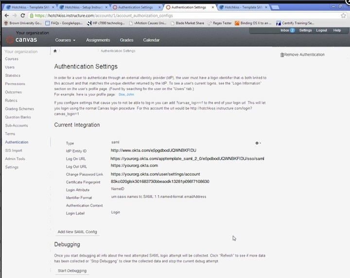

Sign in to your Canvas LMS Admin Console, and click on your organization name in the upper left.
Select Authentication Settings.

Copy and paste the following into the IdP Entity ID field: Sign into the Okta Admin dashboard to generate this value.
Copy and paste the following in the Certificate Fingerprint field:
Sign into the Okta Admin dashboard to generate this value.Copy and paste the following in the Login Attribute field:NameID